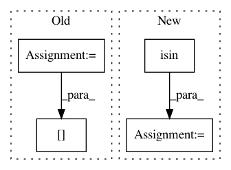

1cc277630f2381f2ba0f01dcf833801a830f5c3b,skimage/metrics/_contingency_table.py,,contingency_table,#,7
Before Change
im_test_r = im_test.ravel()
im_true_r = im_true.ravel()
ignored = np.zeros(im_true_r.shape, np.bool)
for label in ignore_labels:
ignored[im_true_r == label] = True
data = np.ones(im_true_r.shape)
data[ignored] = 0
if normalize:
data = data / im_true.size
cont = sparse.coo_matrix((data, (im_true_r, im_test_r))).tocsr()
After Change
ignore_labels = []
im_test_r = im_test.reshape(-1)
im_true_r = im_true.reshape(-1)
data = np.isin(im_true_r, ignore_labels, invert=True).astype(float)
if normalize:
data /= np.count_nonzero(data)
cont = sparse.coo_matrix((data, (im_true_r, im_test_r))).tocsr()
return cont
In pattern: SUPERPATTERN
Frequency: 3
Non-data size: 4
Instances
Project Name: scikit-image/scikit-image
Commit Name: 1cc277630f2381f2ba0f01dcf833801a830f5c3b
Time: 2020-08-04
Author: rfezzani@gmail.com
File Name: skimage/metrics/_contingency_table.py
Class Name:
Method Name: contingency_table
Project Name: yzhao062/pyod
Commit Name: 24d96c7ec2d80322ceb7a084199b891c9ebf88b9
Time: 2019-03-12
Author: yalmardeny@tssg,org
File Name: pyod/models/sod.py
Class Name: SOD
Method Name: _snn
Project Name: automl/auto-sklearn
Commit Name: b571351e4ff87845a78ba4c954e5f7d41bfba95e
Time: 2020-03-27
Author: feurerm@informatik.uni-freiburg.de
File Name: autosklearn/pipeline/implementations/MinorityCoalescer.py
Class Name: MinorityCoalescer
Method Name: transform